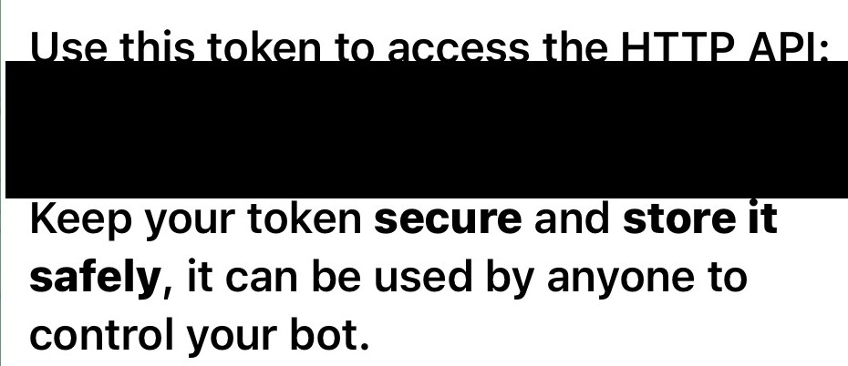
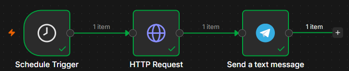

The 8 AM Weather Bot. One trigger, one action. About 20 minutes. No code.
Every automation people flex — the n8n builds, the WhatsApp bots, the "AI agents" — is the same skeleton underneath: a trigger and an action, stacked.
So don't start with Python, a $2,000 course or 20 hours of tutorials. Start with one small workflow that runs on its own. This is it:
Every morning at 8, your phone gets today's high and the chance of rain. You never touch it again.
Build it, publish it, then don't touch it for three days. The first time it fires while you're asleep, it clicks.
/newbot.bot (e.g. mymorning_bot).7123456789:AAHk3x9…Message BotFather /mybots → your bot → API Token.
Anyone with the token controls your bot. Blur it in every screenshot. If it leaks, hit Revoke current token on that same screen.

bot):
https://api.telegram.org/bot<YOUR_TOKEN>/getUpdates
"chat":{"id": and copy the number after it.Token has a colon — 7123456789:AAH… — and goes in the credential.
Chat ID is just digits — 583920471 — and goes in the node's Chat ID field.
Page shows "result":[] ? Message your bot again and refresh.
https://api.open-meteo.com/v1/forecast?latitude=40.71&longitude=-74.01&daily=temperature_2m_max,precipitation_probability_max&temperature_unit=fahrenheit&timezone=America%2FNew_York&forecast_days=1
temperature_2m_max and precipitation_probability_max.Open-Meteo: free, no API key, for personal non-commercial use.
Good morning.
High {{ $json.daily.temperature_2m_max[0] }}°F · {{ $json.daily.precipitation_probability_max[0] }}% chance of rainClick Publish, top right. Save only keeps a draft — nothing runs on schedule until you publish. Edit it later? Publish again.
Then leave it alone for three mornings. If a message doesn't land, open the Executions tab: it shows whether it ran and where it stopped.

| Error | Fix |
|---|---|
| Chat not found | Send your bot "hi", then get the Chat ID again from getUpdates. It must be your chat with your bot, not BotFather. |
| Bad request — check your parameters | Open the error's Details. It's almost always "chat not found" (above) or an empty message (below). |
| Unauthorized | Wrong token, or a Chat ID pasted where the token goes. Re-copy it: /mybots → your bot → API Token. |
| Message is empty or says undefined | The expression can't find the data. Run the HTTP Request step first and check the field names match. |
| Nothing came at 8 AM | Did you hit Publish? Is the timezone set? Check Executions. |
The first two rows are the exact walls I hit building this one. Everyone hits them. They're not you.
Put an IF node between the forecast and Telegram, and only let the message through when rain is over 50%.
Same skeleton, one more step. Now it isn't a daily report — it's an alert that only speaks when it matters.
Built yours? Post the screenshot and tag @flighty.builds. The next build drops on the feed.